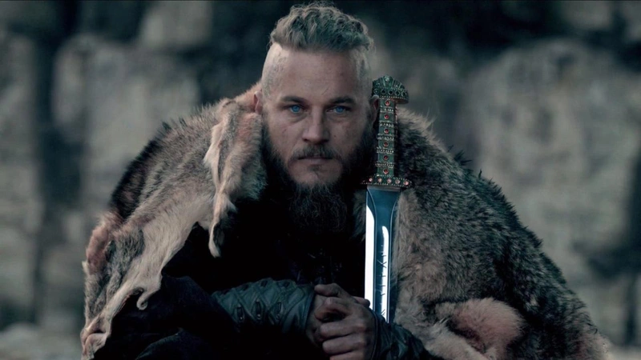
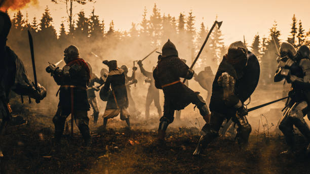

VIKINGS WAR
The Viking lifestyle was centered on farming, seafaring, and exploration. They lived in rural communities, raising crops and livestock, and resided in large communal longhouses. Expert shipbuilders, they used longships for both trading and raiding, reaching as far as North America and the Middle East. Viking society valued bravery, loyalty, and honor, with warriors holding high status, while religion played a key role, with gods like Odin and Thor guiding their beliefs. Though known for raids, many Vikings were also settlers and traders, leaving a lasting cultural legacy.
Viking land warfare involved quick, strategic raids and the use of shock tactics to overwhelm their enemies. They typically fought in small, agile groups, employing surprise attacks on settlements and military outposts. Vikings used a variety of weapons, including swords, axes, spears, and shields, often engaging in close combat. Their strong warrior culture emphasized bravery and honor, and they were known for their ferocity in battle. After the initial raids, Vikings often settled in conquered territories, integrating with local populations and establishing control over land.
For more info, visit Example Site.